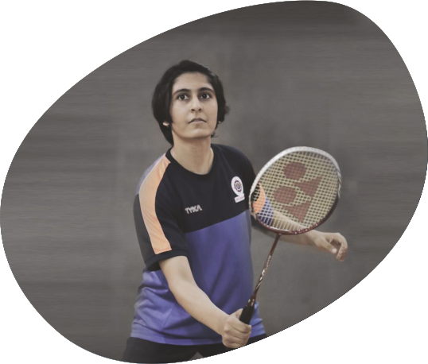
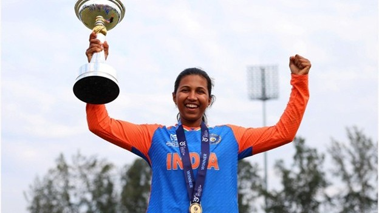
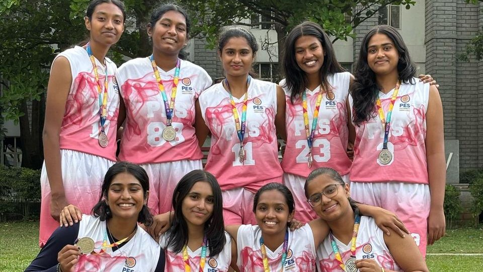
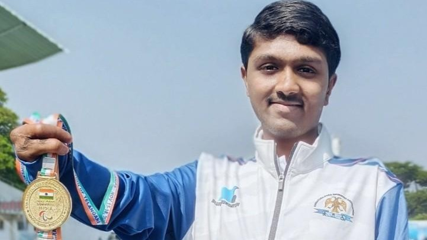

Get In Touch
Have questions about BBA in Sports Management admissions?
Share a few details and our admissions counsellors will walk you through eligibility, fees, scholarships and the application timeline — no obligation.
- Fast Response — a counsellor calls back within 24 hours.
- One-on-One Guidance — personalised help with eligibility and documentation.
- No Obligation — ask questions before you decide to apply.
Fill this in and we'll reach out shortly.



Eligibility
50% aggregate score in 10+2 or equivalent in any stream from a recognized board. Register to PES Entrance Test Today - https://admissions.pes.edu
About the Programme
Own The Game
The BBA in Sports Management is a specialized undergraduate program designed for individuals aspiring to pursue a professional career in the sports industry. This 120-credit program adopts a holistic approach to the development of sports professionals, integrating academic knowledge with practical exposure across multiple domains.
The curriculum integrates active sports training with key disciplines such as Sports Analytics, Sports Nutrition, Sports Psychology, Sports Marketing, Entrepreneurship, Sports Law, Yoga, and related areas. It also includes core management subjects such as Human Resource Management, Quantitative Techniques, Financial Accounting, and Economics. The primary objective of the program is to develop industry-ready professionals equipped with the competencies required to transform their passion for sports into specialized career opportunities.
Program Components
- 36% Sports Subjects
- 30% Management Subjects
- 27% Internship
- 7% Others
Program Delivery
- 50% Theory
- 50% Practicals
Program Design
- Ethics
- Internships
- Management
- Elements of Sports
In our BBA Sports Management program, the Curriculum Design is carefully structured to blend fundamental business concepts with specific knowledge and skills tailored to the sports industry. Core business subjects such as accounting, finance, marketing, and management are supplemented with specialized courses focusing on sports marketing, athlete management, event planning, sports law, sports sociology, economics in sports, sports physiology, wellness and nutrition, sports journalism and facility management.
Students in BBA programs with a sports management specialization benefit from Exposure to the sports industry through internships, field trips to sports facilities, guest lectures by industry professionals, and networking opportunities. These experiences provide invaluable insights into the unique challenges and opportunities within the sports business landscape.
The Teaching-Learning process in these programs incorporates a mix of theoretical lectures, practical exercises, case studies, and industry projects, allowing students to apply business principles to real-world sports scenarios.
Assessments include presentations, content writing, reports, strategic analyses of sports organizations, and evaluations of sports event management plans. Research component becomes an integral part of the program.
About the Programme
Student Achievement
View all student achievementRegister for Admissions

About the Programme
Niki Prasad, rising star in women's cricket
Niki Prasad, student of second semester of BBA-SM, captained the Indian team to victory in the U19 Women's T20 World Cup held in Malaysia from January 18 to February 2, 2025.
February 03, 2025
Learn MoreRegister for Admissions

About the Programme
Basketball win for women’s team
PESU Basketball women’s team emerged as runners-up in the inter university collegiate Basketball tournament organized by Reva university on March 10-11, 2025.
March 13, 2025
Learn MoreRegister for Admissions

About the Programme
25th National Para Swimming Championship
PES University is proud to celebrate the outstanding achievement of its MBA second-year student, Mr. Naveen Venkatesh, who showcased exceptional talent at the 25th National Para Swimming Championship held in Gachibowli, Hyderabad....
November 25, 2025
Learn MoreFinancial Support
Merit scholarships, awarded on performance
Over ₹140 crores in merit scholarships have been given to PES University students since 2014.
Merit Scholarships
Awarded on CGPA / SGPAProf. MRD Scholarships
Merit Certificate + 50% Tuition Fee Refund for Top 5% of the Students based on their CGPA.
Prof. CNR Rao Scholarships
Merit Certificate + 40% Tuition Fee Refund for the next 20% of the Students based on their SGPA.
Distinction Awards
Merit Certificate for Students securing 7.75+ SGPA.
PES Loyalty Program
Awarded on family / institutional ties, every year of studyPES Employees
Children of full-time staff, 5+ years employment.
PES Institution Students
Graduates of any PES institution or sister concern.
Siblings of Students
Siblings of currently enrolled PES students.
Alumni Family
Siblings and children of PES University alumni.
University Highlights
Recognition beyond the programme
The accreditations and rankings behind PES University as a whole.
University in Karnataka
Among new universities under 5 years, ranked by KSURF.
NAAC Accredited
PES University holds NAAC's top-grade accreditation nationally.
B-School in Karnataka
Times of India B-School Rankings, 2021.
Most Preferred B-School
Second only to IIM Bangalore among B-School aspirants, per Times of India.